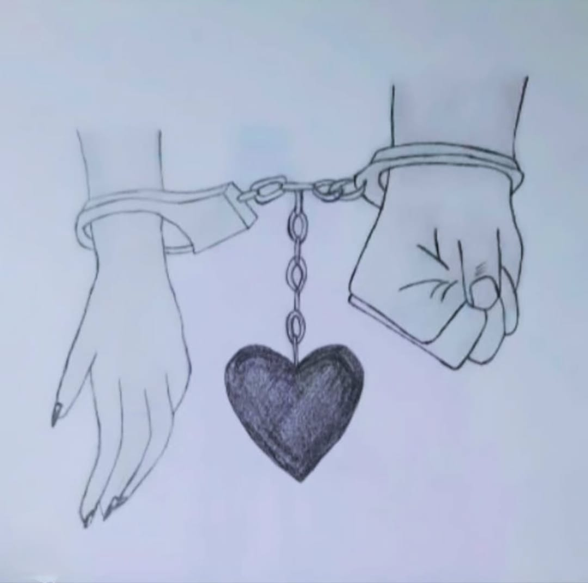

Handcuff Hands

Medium: Pencil Art
Year: 2021
This Artwork Represents Handcuff Hands In A Detailed Pencil Art Style,
The Handcuff Hands Artwork Powerfully Conveys Control, Struggle, And Hidden Emotions, With Strong Lines And Tense
Details Symbolizing Bondage, Justice, And The Conflict Between Freedom And Restraint In Human Life.